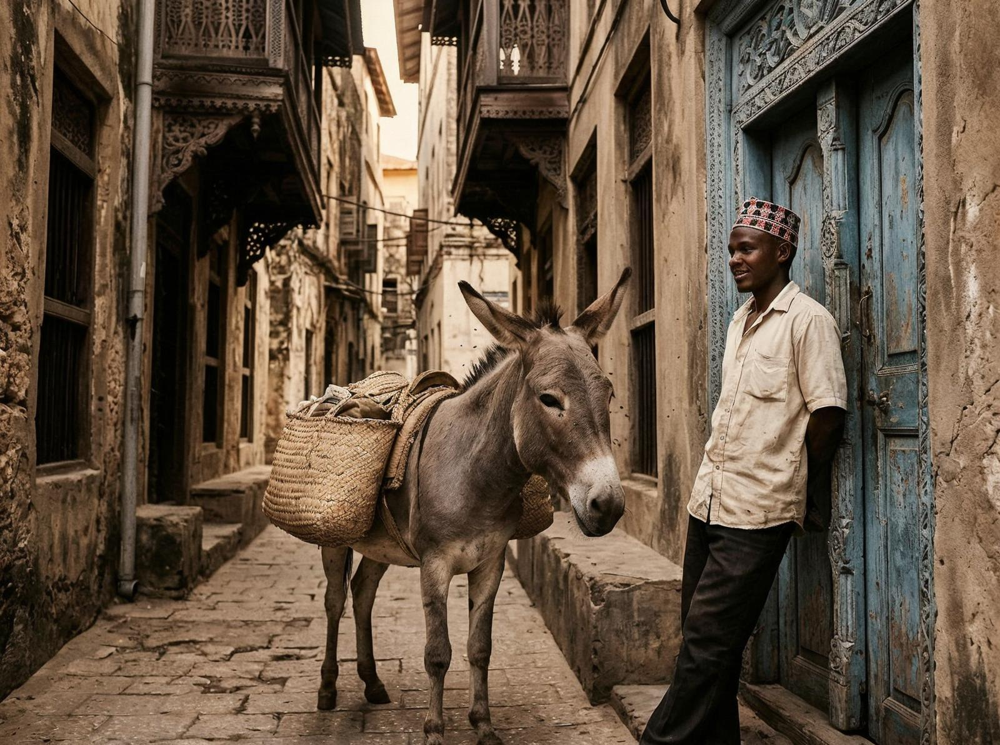
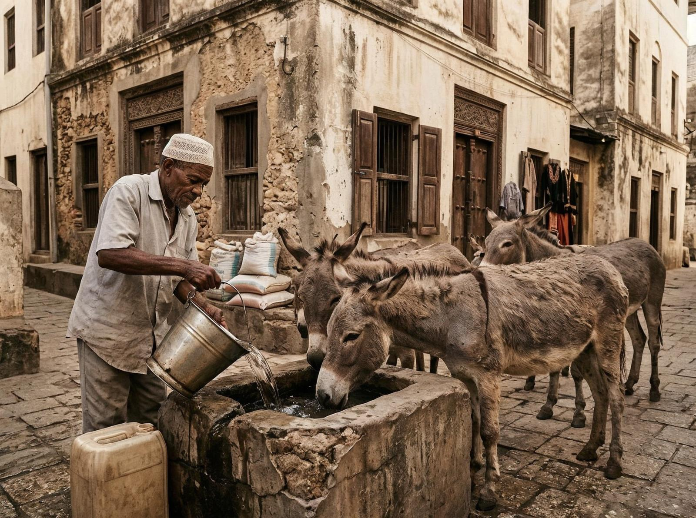

Când am coborât de pe barcă în Lamu, primul lucru pe care l-am auzit a fost sunetul copitelor pe piatră. Nu mașini, nu motociclete — doar măgari. Lamu Island, situată de pe coasta Keniei, are peste 3.000 de măgari și nici o mașină. Aleile înguste ale orașului vechi nu permit mașini, iar tradiția a continuat timp de secole.
Proverbul local spune "Un om fără măgar e un măgar". Nu e o insultă — e un adevăr. Pe Lamu, dacă nu ai un măgar, ești la mila altora. Măgarii sunt folosite pentru transport de mărfuri, pentru transport de persoane, pentru toate activitățile de zi cu zi. Unii proprietari își scriu numărul de telefon pe măgarul lor, ca să fie găsit dacă rătăcește.
Ceea ce e interesant e că măgarii sunt parte integrantă a economiei locale. Există un sanctuar de măgari, o clinică veterinară, chiar și o cursă anuală de măgari care atrage turiști din întreaga lume. Măgarii sunt prețioși, sunt respectați, sunt parte din identitatea insulei.

Mergi prin orașul vechi Lamu și vezi casele din piatră corală, cu uși de lemn sculptat, cu curți interioare ascunse. E un oraș vechi de secole, cu influențe arabe, indiene, africane. Nu e un oraș turistic în sensul convențional — e un oraș care trăiește, care funcționează, care are o identitate proprie.
Lamu face parte din arhipelagul Lamu, un grup de insule care a fost un important centru comercial încă din secolul al IX-lea. Arabii, portughezii, olandezii, britanicii — toți au trecut prin aceste insule, toți au lăsat urme. Dar cultura Rapa Nui — numele local al insulei — a continuat să existe.
E genul de loc pe care îl înțelegi doar când vezi un conducător de măgari mergând încet prin alei, cu măgarul său în spate, transportând cumpărăturile, conversând cu vecinii. Nu e un loc modern — e un loc care a rămas la fel timp de secole, unde ritmul e altfel, unde timpul pare să curgă mai încet.

Nu orice insulă e o stațiune. Lamu nu e despre plaje și cocktail-uri — e despre istorie, despre tradiție, despre oameni care au găsit să trăiască în armonie cu mediul lor. Unde 3.000 de măgari înlocuiesc mașinile, unde aleile sunt prea înguste pentru trafic, unde viața continuă la un ritmul ei.
Poate că nu vei avea niciodată un măgar. Poate că nu vei înțelege niciodată de ce un om fără măgar e un măgar. Dar merită să știi că există. Lamu e un argument că există alternative la modernitate, că tradiția poate supraviețui, că insulele pot păstra identitatea lor în ciuda globalizării.